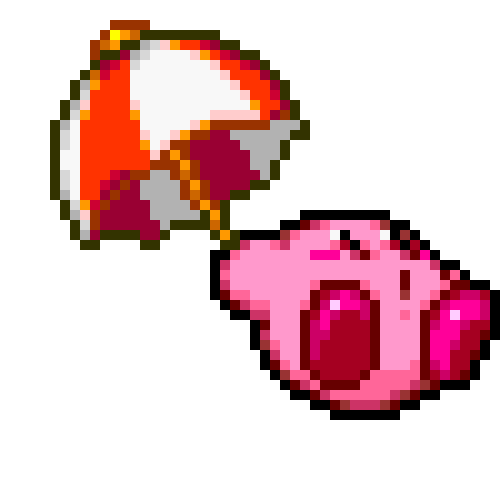

Instructions
You are presented with a board of squares (size is determined by the difficulty you choose).
Some squares contain mines (reprebented by a Kirby), others don't. If you click on a
square containing a bomb, you lose. If you manage to click all the squares (without clicking
on any bombs) you win.
Clicking a square which doesn't have a bomb shows the number of neighbouring squares containing
bombs. Use this information plus some guess work to avoid the bombs.
To open a square, point at the square and click on it. To mark a square you think is a bomb,
point and right-click to put a flag (represented by a colorful Kirby), to remove the flag you
have to right-click on it again. You only have a fixed number of flags available, which is
determined by the number of bombs present on the board.
Have fun!
